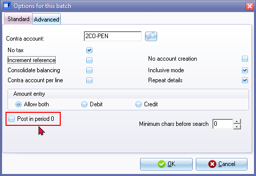
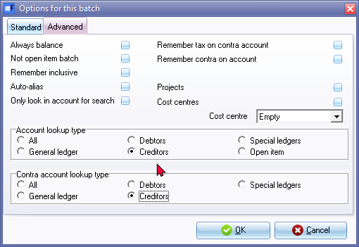
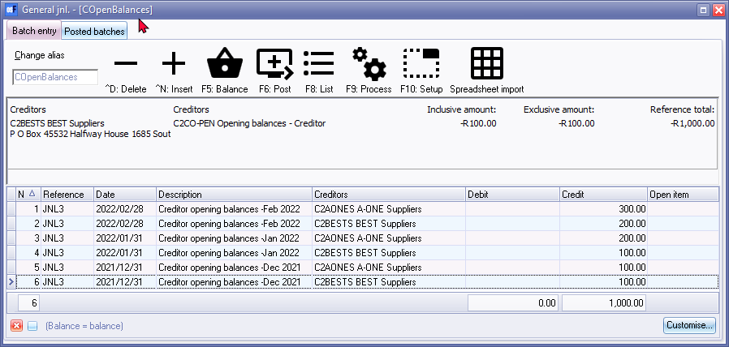
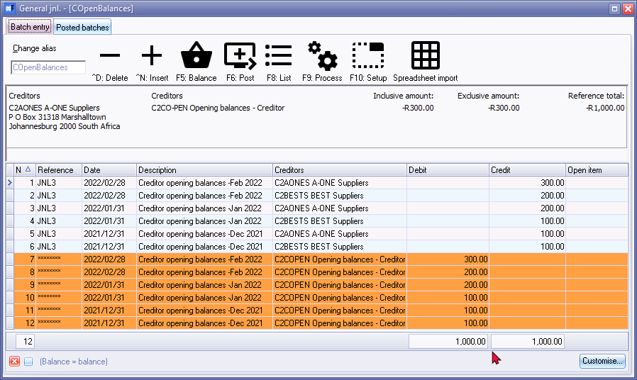
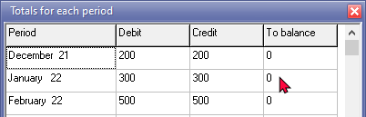
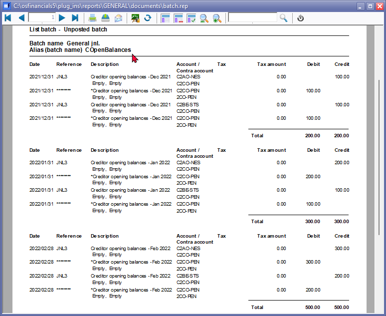
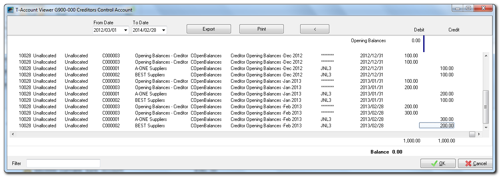
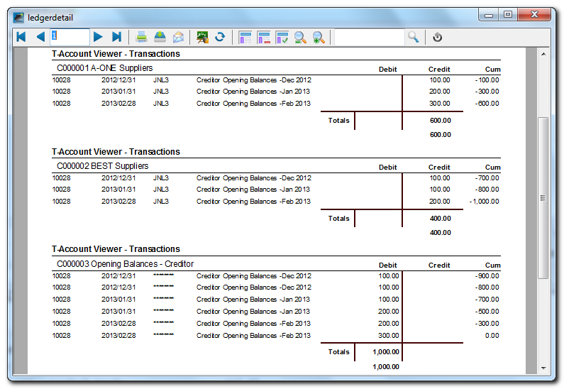
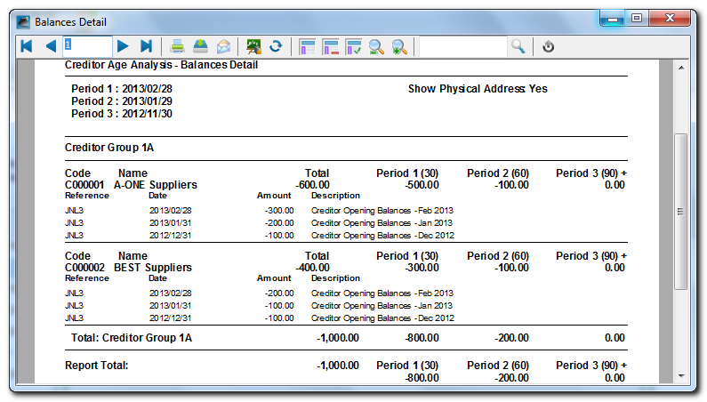

Take-on Creditor Opening Balances
Which records is required from your previous accounting system to take on opening balances for creditors (suppliers/vendors) in osFinancials?
When transitioning to a new accounting system like osFinancials and taking on opening balances, you will need certain records and information from your previous accounting system. Here are the essential records and data you should have for creditors (suppliers/vendors):
- Trial Balance: Obtain a copy of the trial balance from your previous accounting system. This trial balance should include the closing balances of all your accounts at the end of the previous accounting period. It will serve as a starting point for entering opening balances in osFinancials. The total balances of Creditor's control account (Accounts payable account) should be entered.
- Creditor (Accounts Payable) Reports: These reports show the outstanding balances you owe to your suppliers or creditors. You should obtain records of outstanding invoices, bills, and supplier statements as of the transition date. This information is necessary for accurately setting up your accounts payable balances and creating accurate opening balances for your creditor accounts in osFinancials.
- Creditor (Supplier/Vendor) Information: Information about your creditors (suppliers/vendors), including contact details, credit terms, and outstanding balances, can be helpful for setting up accounts receivable and accounts payable in osFinancials.
- Supplier Invoices and Statements: It can be helpful to have copies of supplier invoices and statements, particularly if there are any discrepancies or disputes that need to be resolved during the transition.
- Aged Payables Report: An aged payables report shows how long each payable has been outstanding. It can be useful for accurately ageing your outstanding creditor balances in osFinancials, especially if you plan to use the ageing facility in the osFinancials.
Having these records and data readily available will make the process of taking on opening balances in osFinancials smoother and more accurate. It's essential to maintain accuracy during the transition to ensure the continuity of your financial records and reporting.
Taking on opening balances for creditor accounts is an essential step in the accounting process, especially when transitioning to a new accounting system, like osFinancials. Here's a step-by-step guide on how to do this using osFinancials:
- Add Creditor (Supplier/Vendor) accounts: Create or add each individual creditor (supplier/vendor) account. Each individual creditor (supplier/vendor) account should contain specific information about your creditors (suppliers/vendors), including postal and delivery addresses, contact details, credit terms (including credit limits) tax and registration numbers, and more. You could use the Filter and search options to verify the details and or using Creditor listing reports to verify the correct details.
- Set Up an "Opening Balances - Creditors" Account: In osFinancials, create a new account called "Opening Balances - Creditors." This account will be used to record the total opening balances for all your creditor accounts. This Opening balance should match the total amount in the Creditors control account (Accounts payable account) and would be processed when Taking on the Trial Balance of the General ledger accounts.
- Process Journal Entries: Create journal entries to allocate the outstanding amounts to individual creditor accounts. The journal entries should debit the "Opening Balances - Creditors" account and credit the respective creditor accounts.
Example Journal Entry:
- Debit: Opening Balances - Creditors
- Credit: Supplier A (Individual Creditor Account)
Repeat this process for each creditor account until all opening balances have been allocated.
If you wish to utilize the ageing feature in osFinanacials, when entering the opening balances in individual creditor accounts, you need to capture the outstanding balances at the end of each accounting period as per aging reports or lists from your previous accounting system. a breakdown of each individual to track and manage the ageing of outstanding payables. This will help you monitor how long each payable has been outstanding, which is essential for managing cash flow and supplier relationships.
- Import or Enter Opening Balances: Import or manually enter the opening balances for your creditor accounts into the "Opening Balances - Creditors" account. These balances should represent the amounts you owe to your suppliers at the beginning of the accounting period.
- Verify the Totals: Double-check that the total outstanding amount in the "Opening Balances - Creditors" account matches the total opening balances in your trial balance. It's essential to ensure accuracy at this stage.
- Utilize the Ageing Facility: When entering the opening balances are correctly recorded in individual creditor accounts, you can utilize the ageing facility within your accounting software to track and manage the ageing of outstanding payables. This will help you monitor how long each payable has been outstanding, which is essential for managing cash flow and supplier relationships.
- Reconcile and Review: After processing the journal entries, reconcile the individual creditor accounts to make sure they match the opening balances from your trial balance. This step ensures that all amounts have been correctly transferred.
- Regularly Update Creditor Accounts: Going forward, continue to update your creditor accounts with new transactions, purchases, and payments as they occur. Regularly reconcile these accounts to ensure accuracy.
Remember that accurate recording of creditor balances is crucial for financial reporting and maintaining good relationships with your suppliers. Always consult your specific accounting software's documentation and guidelines for the most accurate and up-to-date instructions on handling opening balances and creditor accounts.
===
The process of capturing outstanding balances for individual creditor accounts, especially if you wish to utilize the ageing feature in osFinancials, requires careful attention to detail and accuracy. Here are the steps to create journal entries and capture outstanding balances at the end of each accounting period:
- Obtain Ageing Reports: From your previous accounting system, obtain ageing reports or lists for your outstanding creditor balances. These reports should break down the amounts owed to each supplier by the length of time the amounts have been outstanding (e.g., current, 30 days, 60 days, 90 days, etc.).
- Review Ageing Reports: Review the ageing reports to understand the ageing categories and the amounts owed to each supplier within each category. These reports will help you accurately allocate outstanding balances to individual creditor accounts in osFinancials.
- Create Individual Creditor Accounts: In osFinancials, ensure that you have created individual creditor accounts for each of your creditors (suppliers/vendors). These accounts should be set up with the appropriate details, including the supplier's name, contact information, and any specific terms or agreements.
- Record Opening Balances by Ageing Category: Create journal entries to allocate the outstanding amounts to individual creditor accounts based on the ageing categories from your ageing reports. For each ageing category (e.g., current, 30 days, 60 days), you will create a separate journal entry.
- Example Journal Entry for the "Current" Category:
- Debit: Opening Balances - Creditors
- Credit: Supplier A (Individual Creditor Account)
- Example Journal Entry for the "30 Days" Category:
- Debit: Opening Balances - Creditors
- Credit: Supplier B (Individual Creditor Account)
- Repeat this process for each ageing category until all outstanding balances have been allocated to individual creditor accounts.
- Maintain Ageing Categories: In osFinancials, you may want to set up ageing categories or ageing buckets to track the ageing of outstanding payables going forward. Ensure that these categories align with your ageing reports from the previous accounting system.
- Reconcile and Verify: After recording the journal entries, reconcile the individual creditor accounts in osFinancials with the corresponding balances from your ageing reports. Verify that the amounts owed to each supplier match the information from your previous accounting system.
- Regularly Update and Age Accounts: Going forward, update the individual creditor accounts in osFinancials with new transactions, purchases, and payments as they occur. Use the ageing feature to monitor the ageing of outstanding payables accurately.
By following these steps, you can accurately capture outstanding balances at the end of each accounting period for individual creditor accounts in osFinancials and utilize the ageing feature to track the ageing of payables effectively. This approach ensures that your financial records reflect the true state of your accounts payable and helps with financial reporting and cash flow management.
Example: Process Opening Balances for Creditor accounts
To enter Opening Balances for your Creditor accounts:
- On the Default ribbon, select Batch entry (F2).
- Select the General Jnl and click on the Open button.
- Enter the Alias (batch name) in the Change alias field on the Topbar of the Batch entry screen. (In this example, COpenBalances is used for Creditor Opening Balances).
- Click on the F10:Setup icon to set your batch up. The Options for this batch screen will be displayed. The settings are basically the same as for the Opening Balances of the General ledger account. Change the Batch Settings as follows:
- Standard tab – Select the Contra account for "Opening Balances – Creditors (2COO-PEN)" and Set Amount entry to Credit.

- Advanced tab – Set the "Account lookup type" and the "Contra account lookup type" both to Creditors.

- Once setup, click on the OK button.
- Enter the following transactions:

|
|
The Opening Balances – Creditor account should reflect the total of all Creditor accounts (in the Creditor's control account). You only need to list (select) the individual creditor accounts and enter their balances. You may enter only the total outstanding balance (i.e. 1000.00 as per this example) as at 28 February 2022 for each creditor account (2 entries). If you wish to optimise the ageing facility in osFinancials, you may enter the balances for each creditor account as at the end of each period, e.g. 28 February 2022 – 500.00, 31 January 2022 – 300.00 and 31 December 2021 – 200.00. |

- Click on the F5: Balance icon. osFinancials will generate balancing entries for each period. After entering the individual balances for each period, and balancing the batch, the transactions should be displayed as follows:

- Click on the F5:Balance icon to generate balancing transactions.

|
|
You may click on the F9: Process icon and select the Totals per Period option. This will list the totals of all the Debit entries and all the Credit entries for each period. The difference should be zero.  |
- Click on the F8:List icon to print a list of the transactions in the batch.

- Click on the F6:Post icon, to post (update) the batch to the ledger. A confirmation message will be displayed.
“Do you want to continue posting? Batch contains transactions posting to last year!”
- Click on the Yes button, or press the Enter key to continue.
|
|
If you click on the No button, the transactions will not be posted. |

- osFinancials will post the entries for each period to the ledger.
The Opening Balances – Creditor account should have a zero balance after balances were credited to the individual Creditor accounts.
The Batch for Opening Balances (e.g. BatchID 10028) should have a zero balance (debit transactions in Opening Balances – Creditor account = credit transactions individual Creditor accounts).

The Creditor age analysis report for 28 February 2013 (Reports → Creditors → Age analysis - Balances detail) will display the totals for each period as follows:
